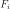
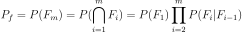
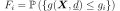

SubsetSampling¶
-
class
SubsetSampling(*args)¶ Subset simulation.
- Parameters
- event
Event Event we are computing the probability of.
- proposalRangefloat, optional
Proposal range length
- targetProbabilityfloat, optional
Value of between successive steps
- event
See also
Notes
The goal is to estimate the following probability
The idea of the subset simulation method [au2001] is to replace simulating a rare failure event in the original probability space by a sequence of simulations of more frequent conditional events 
The original probability estimate rewrites

And each conditional subset failure region is chosen by setting the threshold so that leads to a conditional failure probability of order

The conditional samples are generated by the means of Markov Chains, using the Metropolis Hastings algorithm.
 being the number of simulations per subset, and the
conditional probability of each subset event, and the
autocorrelation between Markov chain samples.
being the number of simulations per subset, and the
conditional probability of each subset event, and the
autocorrelation between Markov chain samples.The first event not being conditional, expresses as the classic Monte Carlo c.o.v.
- Attributes
thisownThe membership flag
Methods
drawProbabilityConvergence(*args)Draw the probability convergence at a given level.
Accessor to the block size.
Accessor to the object’s name.
Coefficient of variation per step accessor.
Conditional probability accessor.
Accessor to the convergence strategy.
getEvent()Accessor to the event.
Input sample accessor.
Output sample accessor.
Autocorrelation accessor.
getId()Accessor to the object’s id.
Accessor to the maximum coefficient of variation.
Accessor to the maximum sample size.
Accessor to the maximum standard deviation.
getName()Accessor to the object’s name.
Subset steps number accesor.
Probability estimate accessor.
Proposal range length accessor.
Accessor to the results.
Accessor to the object’s shadowed id.
Threshold accessor.
Accessor to verbosity.
Accessor to the object’s visibility state.
hasName()Test if the object is named.
Test if the object has a distinguishable name.
run()Launch simulation.
setBetaMin(betaMin)Hypersphere radius accessor.
setBlockSize(blockSize)Accessor to the block size.
setConditionalProbability(conditionalProbability)Conditional probability accessor.
setConvergenceStrategy(convergenceStrategy)Accessor to the convergence strategy.
setISubset(iSubset)Conditonal simulation flag accessor.
setKeepEventSample(keepEventSample)Sample storage accessor.
Accessor to the maximum coefficient of variation.
setMaximumOuterSampling(maximumOuterSampling)Accessor to the maximum sample size.
Accessor to the maximum standard deviation.
setName(name)Accessor to the object’s name.
setProgressCallback(*args)Set up a progress callback.
setProposalRange(proposalRange)Proposal range length accessor.
setShadowedId(id)Accessor to the object’s shadowed id.
setStopCallback(*args)Set up a stop callback.
setVerbose(verbose)Accessor to verbosity.
setVisibility(visible)Accessor to the object’s visibility state.
-
__init__(*args)¶ Initialize self. See help(type(self)) for accurate signature.
-
drawProbabilityConvergence(*args)¶ Draw the probability convergence at a given level.
- Parameters
- levelfloat, optional
The probability convergence is drawn at this given confidence length level. By default level is 0.95.
- Returns
- grapha
Graph probability convergence graph
- grapha
-
getBlockSize()¶ Accessor to the block size.
- Returns
- blockSizeint
Number of terms in the probability simulation estimator grouped together. It is set by default to 1.
-
getClassName()¶ Accessor to the object’s name.
- Returns
- class_namestr
The object class name (object.__class__.__name__).
-
getCoefficientOfVariationPerStep()¶ Coefficient of variation per step accessor.
- Returns
- coef~openturns.Point
Coefficient of variation at each subset step.
-
getConditionalProbability()¶ Conditional probability accessor.
Value of between successive steps.
- Returns
- probfloat
Conditional probability value.
-
getConvergenceStrategy()¶ Accessor to the convergence strategy.
- Returns
- storage_strategy
HistoryStrategy Storage strategy used to store the values of the probability estimator and its variance during the simulation algorithm.
- storage_strategy
-
getEventInputSample()¶ Input sample accessor.
- Returns
- inputSample~openturns.Sample
Input sample.
-
getEventOutputSample()¶ Output sample accessor.
- Returns
- outputSample~openturns.Sample
Ouput sample.
-
getGammaPerStep()¶ Autocorrelation accessor.
- Returns
- prob~openturns.Point
Autocorrelation values.
-
getId()¶ Accessor to the object’s id.
- Returns
- idint
Internal unique identifier.
-
getMaximumCoefficientOfVariation()¶ Accessor to the maximum coefficient of variation.
- Returns
- coefficientfloat
Maximum coefficient of variation of the simulated sample.
-
getMaximumOuterSampling()¶ Accessor to the maximum sample size.
- Returns
- outerSamplingint
Maximum number of groups of terms in the probability simulation estimator.
-
getMaximumStandardDeviation()¶ Accessor to the maximum standard deviation.
- Returns
- sigmafloat,

Maximum standard deviation of the estimator.
- sigmafloat,
-
getName()¶ Accessor to the object’s name.
- Returns
- namestr
The name of the object.
-
getNumberOfSteps()¶ Subset steps number accesor.
- Returns
- nint
Number of subset steps.
-
getProbabilityEstimatePerStep()¶ Probability estimate accessor.
- Returns
- prob~openturns.Point
Probability estimate values.
-
getProposalRange()¶ Proposal range length accessor.
- Returns
- rangefloat
Range length.
-
getResult()¶ Accessor to the results.
- Returns
- results
SimulationResult Structure containing all the results obtained after simulation and created by the method
run().
- results
-
getShadowedId()¶ Accessor to the object’s shadowed id.
- Returns
- idint
Internal unique identifier.
-
getThresholdPerStep()¶ Threshold accessor.
- Returns
- threshold~openturns.Point
Threshold values.
-
getVerbose()¶ Accessor to verbosity.
- Returns
- verbosity_enabledbool
If True, the computation is verbose. By default it is verbose.
-
getVisibility()¶ Accessor to the object’s visibility state.
- Returns
- visiblebool
Visibility flag.
-
hasName()¶ Test if the object is named.
- Returns
- hasNamebool
True if the name is not empty.
-
hasVisibleName()¶ Test if the object has a distinguishable name.
- Returns
- hasVisibleNamebool
True if the name is not empty and not the default one.
-
run()¶ Launch simulation.
Notes
It launches the simulation and creates a
SimulationResult, structure containing all the results obtained after simulation. It computes the probability of occurence of the given event by computing the empirical mean of a sample of size at most outerSampling * blockSize, this sample being built by blocks of size blockSize. It allows to use efficiently the distribution of the computation as well as it allows to deal with a sample size by a combination of blockSize and
outerSampling.
by a combination of blockSize and
outerSampling.
-
setBetaMin(betaMin)¶ Hypersphere radius accessor.
- Parameters
- betafloat
Radius value of the exclusion hypershere when the conditional simulation is enabled.
-
setBlockSize(blockSize)¶ Accessor to the block size.
- Parameters
- blockSizeint,

Number of terms in the probability simulation estimator grouped together. It is set by default to 1.
- blockSizeint,
Notes
For Monte Carlo, LHS and Importance Sampling methods, this allows to save space while allowing multithreading, when available we recommend to use the number of available CPUs; for the Directional Sampling, we recommend to set it to 1.
-
setConditionalProbability(conditionalProbability)¶ Conditional probability accessor.
Value of between successive steps.
- Parameters
- probfloat
Conditional probability value.
-
setConvergenceStrategy(convergenceStrategy)¶ Accessor to the convergence strategy.
- Parameters
- storage_strategy
HistoryStrategy Storage strategy used to store the values of the probability estimator and its variance during the simulation algorithm.
- storage_strategy
-
setISubset(iSubset)¶ Conditonal simulation flag accessor.
- Parameters
- isubsetbool
Whether to enable conditional simulation for the first step of the simulation.
-
setKeepEventSample(keepEventSample)¶ Sample storage accessor.
- Parameters
- probbool
Whether to keep the event samples.
-
setMaximumCoefficientOfVariation(maximumCoefficientOfVariation)¶ Accessor to the maximum coefficient of variation.
- Parameters
- coefficientfloat
Maximum coefficient of variation of the simulated sample.
-
setMaximumOuterSampling(maximumOuterSampling)¶ Accessor to the maximum sample size.
- Parameters
- outerSamplingint
Maximum number of groups of terms in the probability simulation estimator.
-
setMaximumStandardDeviation(maximumStandardDeviation)¶ Accessor to the maximum standard deviation.
- Parameters
- sigmafloat,
Maximum standard deviation of the estimator.
- sigmafloat,
-
setName(name)¶ Accessor to the object’s name.
- Parameters
- namestr
The name of the object.
-
setProgressCallback(*args)¶ Set up a progress callback.
Can be used to programmatically report the progress of a simulation.
- Parameters
- callbackcallable
Takes a float as argument as percentage of progress.
Examples
>>> import sys >>> import openturns as ot >>> experiment = ot.MonteCarloExperiment() >>> X = ot.RandomVector(ot.Normal()) >>> Y = ot.CompositeRandomVector(ot.SymbolicFunction(['X'], ['1.1*X']), X) >>> event = ot.Event(Y, ot.Less(), -2.0) >>> algo = ot.ProbabilitySimulationAlgorithm(event, experiment) >>> algo.setMaximumOuterSampling(100) >>> algo.setMaximumCoefficientOfVariation(-1.0) >>> def report_progress(progress): ... sys.stderr.write('-- progress=' + str(progress) + '%\n') >>> algo.setProgressCallback(report_progress) >>> algo.run()
-
setProposalRange(proposalRange)¶ Proposal range length accessor.
- Parameters
- rangefloat
Range length.
-
setShadowedId(id)¶ Accessor to the object’s shadowed id.
- Parameters
- idint
Internal unique identifier.
-
setStopCallback(*args)¶ Set up a stop callback.
Can be used to programmatically stop a simulation.
- Parameters
- callbackcallable
Returns an int deciding whether to stop or continue.
Examples
Stop a Monte Carlo simulation algorithm using a time limit
>>> import openturns as ot >>> experiment = ot.MonteCarloExperiment() >>> X = ot.RandomVector(ot.Normal()) >>> Y = ot.CompositeRandomVector(ot.SymbolicFunction(['X'], ['1.1*X']), X) >>> event = ot.Event(Y, ot.Less(), -2.0) >>> algo = ot.ProbabilitySimulationAlgorithm(event, experiment) >>> algo.setMaximumOuterSampling(10000000) >>> algo.setMaximumCoefficientOfVariation(-1.0) >>> timer = ot.TimerCallback(0.1) >>> algo.setStopCallback(timer) >>> algo.run()
-
setVerbose(verbose)¶ Accessor to verbosity.
- Parameters
- verbosity_enabledbool
If True, make the computation verbose. By default it is verbose.
-
setVisibility(visible)¶ Accessor to the object’s visibility state.
- Parameters
- visiblebool
Visibility flag.
-
thisown¶ The membership flag